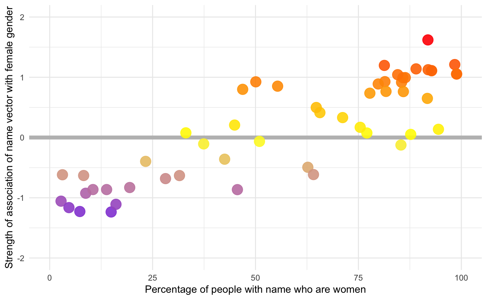

replication_replication.RmdIn the following we set the number of permuations to 1000. This means that, although the point estimates should agree with the paper table the p values will be relatively imprecise. To make them more precise change 1000 to a larger number and be prepared to wait a little longer. In most cases the p values is less than 0.0001, so imprecision has no real implications for statistical confidence.
First we’ll load the package and set up some graphics parameters.
library(cbn)
library(ggplot2)
theme_set(theme_minimal())its <- cbn_get_items("WEAT", 1)
summary(its)
#> WEAT1
#> Condition Role N
#> Pleasant attribute 25
#> Unpleasant attribute 25
#> Flowers target 25
#> Insects target 25
vecs <- cbn_get_item_vectors("WEAT", 1)
weat_perm(its, vecs, x_name = "Flowers", y_name = "Insects",
a_name = "Pleasant", b_name = "Unpleasant", 1000)
#> S_xyab d p_value
#> 1 2.238165 1.504315 0its <- cbn_get_items("WEAT", 2)
summary(its)
#> WEAT2
#> Condition Role N
#> Pleasant attribute 25
#> Unpleasant attribute 25
#> Instruments target 25
#> Weapons target 25
vecs <- cbn_get_item_vectors("WEAT", 2)
weat_perm(its, vecs, x_name = "Instruments", y_name = "Weapons",
a_name = "Pleasant", b_name = "Unpleasant", 1000)
#> S_xyab d p_value
#> 1 2.290555 1.533989 0its <- cbn_get_items("WEAT", 3)
summary(its)
#> WEAT3
#> Condition Role N
#> Pleasant attribute 25
#> Unpleasant attribute 25
#> AfricanAmericanNames target 32
#> EuropeanAmericanNames target 32
vecs <- cbn_get_item_vectors("WEAT", 3)
weat_perm(its, vecs, x_name = "EuropeanAmericanNames",
y_name = "AfricanAmericanNames",
a_name = "Pleasant", b_name = "Unpleasant", 1000)
#> S_xyab d p_value
#> 1 1.620779 1.405208 0its <- cbn_get_items("WEAT", 4)
summary(its)
#> WEAT4
#> Condition Role N
#> Pleasant attribute 25
#> Unpleasant attribute 25
#> AfricanAmericanNames target 16
#> EuropeanAmericanNames target 16
vecs <- cbn_get_item_vectors("WEAT", 4)
weat_perm(its, vecs, x_name = "EuropeanAmericanNames",
y_name = "AfricanAmericanNames",
a_name = "Pleasant", b_name = "Unpleasant", 1000)
#> S_xyab d p_value
#> 1 0.7272336 1.498582 0its <- cbn_get_items("WEAT", 5)
summary(its)
#> WEAT5
#> Condition Role N
#> Pleasant attribute 8
#> Unpleasant attribute 8
#> AfricanAmericanNames target 16
#> EuropeanAmericanNames target 16
vecs <- cbn_get_item_vectors("WEAT", 5)
weat_perm(its, vecs, x_name = "EuropeanAmericanNames",
y_name = "AfricanAmericanNames",
a_name = "Pleasant", b_name = "Unpleasant", 1000)
#> S_xyab d p_value
#> 1 0.9177094 1.28393 0its <- cbn_get_items("WEAT", 6)
summary(its)
#> WEAT6
#> Condition Role N
#> Career attribute 8
#> Family attribute 8
#> FemaleNames target 8
#> MaleNames target 8
vecs <- cbn_get_item_vectors("WEAT", 6)
weat_perm(its, vecs, x_name = "MaleNames", y_name = "FemaleNames",
a_name = "Career", b_name = "Family", 1000)
#> S_xyab d p_value
#> 1 1.26698 1.813915 0its <- cbn_get_items("WEAT", 7)
summary(its)
#> WEAT7
#> Condition Role N
#> FemaleTerms attribute 8
#> MaleTerms attribute 8
#> Arts target 8
#> Math target 8
vecs <- cbn_get_item_vectors("WEAT", 7)
weat_perm(its, vecs, x_name = "Math", y_name = "Arts",
a_name = "MaleTerms", b_name = "FemaleTerms", 1000)
#> S_xyab d p_value
#> 1 0.1989226 1.055015 0.018its <- cbn_get_items("WEAT", 8)
summary(its)
#> WEAT8
#> Condition Role N
#> FemaleTerms attribute 8
#> MaleTerms attribute 8
#> Arts target 8
#> Science target 8
vecs <- cbn_get_item_vectors("WEAT", 8)
weat_perm(its, vecs, x_name = "Science", y_name = "Arts",
a_name = "MaleTerms", b_name = "FemaleTerms", 1000)
#> S_xyab d p_value
#> 1 0.345604 1.237453 0.004its <- cbn_get_items("WEAT", 9)
summary(its)
#> WEAT9
#> Condition Role N
#> Permanent attribute 7
#> Temporary attribute 7
#> MentalDisease target 6
#> PhysicalDisease target 6
vecs <- cbn_get_item_vectors("WEAT", 9)
weat_perm(its, vecs, x_name = "MentalDisease", y_name = "PhysicalDisease",
a_name = "Temporary", b_name = "Permanent", 1000)
#> S_xyab d p_value
#> 1 0.5051217 1.382755 0.001its <- cbn_get_items("WEAT", 9)
summary(its)
#> WEAT9
#> Condition Role N
#> Permanent attribute 7
#> Temporary attribute 7
#> MentalDisease target 6
#> PhysicalDisease target 6
vecs <- cbn_get_item_vectors("WEAT", 9)
weat_perm(its, vecs, x_name = "MentalDisease", y_name = "PhysicalDisease",
a_name = "Temporary", b_name = "Permanent", 1000)
#> S_xyab d p_value
#> 1 0.5051217 1.382755 0.002its <- cbn_get_items("WEAT", 10)
summary(its)
#> WEAT10
#> Condition Role N
#> Pleasant attribute 8
#> Unpleasant attribute 8
#> OldNames target 8
#> YoungNames target 8
vecs <- cbn_get_item_vectors("WEAT", 10)
weat_perm(its, vecs, x_name = "YoungNames", y_name = "OldNames",
a_name = "Pleasant", b_name = "Unpleasant", 1000)
#> S_xyab d p_value
#> 1 0.3808673 1.212891 0.005its <- cbn_get_items("WEFAT", 2)
its_vecs <- cbn_get_item_vectors("WEFAT", 2)
res <- wefat(its, its_vecs, x_name = "AndrogynousNames",
a_name = "FemaleAttributes", b_name = "MaleAttributes")
head(res)
#> Word S_wab
#> 1 Kelly 0.99455943
#> 2 Tracy 0.76497670
#> 3 Jamie 0.07528516
#> 4 Jackie 0.85222977
#> 5 Jesse -0.61802081
#> 6 Courtney 1.10971314Next we find the gender proportions for each name from the census. In the paper a gender score is constructed from the population proportions (it’s not clear how this was done or where the data came from in more detail than ‘the 1990 US census’). The replication materials bundle these as cbn_gender_name_stats_census1990
data(cbn_gender_name_stats_census1990)
head(cbn_gender_name_stats_census1990)
#> name gender.score percentage.in.population
#> 1 Adrian 0.7692 0.039
#> 2 Alexis -0.4634 0.020
#> 3 Ashley -0.9117 0.159
#> 4 Billie -0.6047 0.043
#> 5 Bobbie -0.7333 0.037
#> 6 Bobby 0.9307 0.116
#> percentage.in.female.population percentage.in.male.population
#> 1 0.009 0.069
#> 2 0.030 0.011
#> 3 0.303 0.014
#> 4 0.069 0.017
#> 5 0.065 0.010
#> 6 0.008 0.223However, it’s not clear how the graphs x values come out of this data set, so we’ll use instead the gender package, which queries the US Social Security Administration to get the proportion of stated males and females with any particular first name. A version of this data is bundled with the package
data(cbn_gender_name_stats)
head(cbn_gender_name_stats)
#> name proportion_male proportion_female gender year_min year_max
#> 1 Adam 0.9959 0.0041 male 1932 2012
#> 2 Adrian 0.9268 0.0732 male 1932 2012
#> 3 Agnes 0.0023 0.9977 female 1932 2012
#> 4 Aisha 0.0014 0.9986 female 1932 2012
#> 5 Aisha 0.0014 0.9986 female 1932 2012
#> 6 Alan 0.9968 0.0032 male 1932 2012We join it to res
res <- merge(res, cbn_gender_name_stats,
by.x = "Word", by.y = "name")and plot the statistic against the gender proportions (converted to percentages)
ggplot(res, aes(x = 100 * proportion_female, y = S_wab, color = S_wab)) +
geom_hline(yintercept = 0, size = 2, col = "grey") +
geom_point(size = 5, alpha = 0.9) +
scale_colour_gradient2(low = "blue", mid = "yellow", high = "red",
guide = FALSE) +
xlim(0, 100) +
ylim(-2, 2) +
xlab("Percentage of people with name who are women") +
ylab("Strength of association of name vector with female gender")
The correlation is
cor.test(res$S_wab, res$proportion_female)
#>
#> Pearson's product-moment correlation
#>
#> data: res$S_wab and res$proportion_female
#> t = 11.67, df = 50, p-value = 6.937e-16
#> alternative hypothesis: true correlation is not equal to 0
#> 95 percent confidence interval:
#> 0.7596398 0.9146643
#> sample estimates:
#> cor
#> 0.8552431which is a tiny bit stronger than the relationship in the paper.